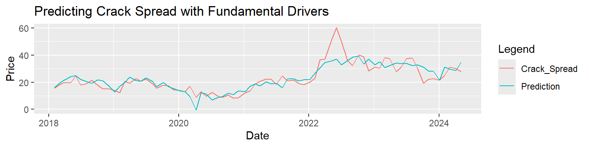
3-2-1 Crack Spread Recommendation
Recommendation
The 3-2-1 crack spread looks bullish based on market fundamentals. Our model predicts a crack spread of 29.95 using forecasted values and 28.65 using the most recently observable data points. Based on the most recent 3-2-1 crack spread price of 21.31, a long position in the crack spread is recommended.
Trading Strategy
Enter long into 2 gasoline and 1 heating oil futures contract, and then enter short into 3 crude oil contracts. Note that crude oil contract volumes are 1000 barrels on the CME and RBOB and Heating Oil volumes are 42,000 gallons (1000 Barrels). Alternatively, enter long into a 3-2-1 Crack Spread Future.
Rationale
The prediction is driven by a regression model (shown above) consisting of 7 market drivers, with sources from the Energy Information Administration, Federal Reserve Economic Data, Yahoo Finance, and Federal Highway Administration. Since the regression model makes use of aligned monthly data points, without interpolation, it’s better used when entering longer time frame positions with a clear stop loss and exit strategy. This model attempts to predict current prices using current fundamental market levels. We choose which position to enter based on whether our prediction is higher or lower than the current price, assuming that our indicator and the market will at some point converge.
Because our data is lagging (not live), forecasting models are developed for each market driver. STL decomposition is used to capture larger structural patterns such as seasonality and trend, and ARIMA models are then used to capture remaining dependency in the residuals. This allows us to predict today’s fundamental levels using previous levels, seasonality and trend. We also predict price using the last observable data points, as a way of measuring the influence of our forecasts on the decision.
Fundamental Market Drivers
Data was selected by correlation with the crack spread prices and by data frequency/quality:
Demand Side (Bullish Influence) Factors:
- Truck Tonnage
- Billion Miles Driven
Supply Side (Bearish Influence) Factors:
- US Crude Inventory
- US Crude Production
- US Gasoline Production
- US Crude Net Imports
- Gasoline Stocks, Conventional
Risk/Reward
Model risk arises from structural changes to fundamental-price equilibrium. When this arises, it can be solved by aging out part of the training data for the regression model.
Sometimes our market drivers will instead respond to the current crack spread. This results in our prediction moving instead of the market price. Assuming no reversals in dependency, our model forecasts an upside potential of 8.64 per barrel, however this is likely overstated as our spread price and prediction may converge.
We use Value at Risk because it gives us a less biased risk estimate independent from our model. The 5% Value at Risk on 1 month positions in the crack spread is -0.282. Our best outcome in the worst 5% of past cases is -0.282 on a 1 month position. Tail risk is more extreme for short positions than long positions (Fig 1). Liquidity risk (the risk of closing out early) can be better assessed using rolling volatilities (Fig 2). Note that rolling 20 and 50 day volatilities are currently low, however note the tendency for 20 day volatilities to spike above average on occasion:
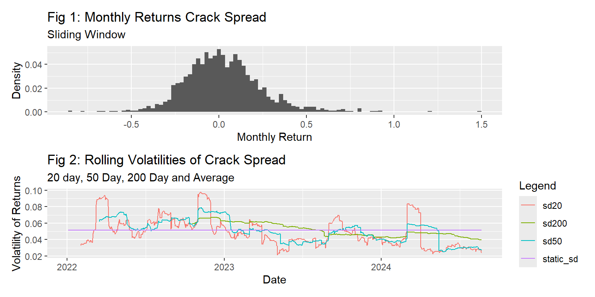
Appendix
Regression, Primary Model
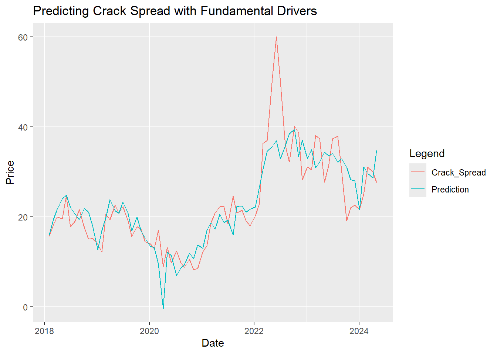
| R_Squared | Adj_R_Squared | SD | P_Val | Degrees_Freedom | AIC | BIC |
|---|---|---|---|---|---|---|
| 0.719456 | 0.6905765 | 5.798058 | 0 | 7 | 492.369 | 513.3456 |
| Market_Driver | Coefficient | Standard_Error | P_Val |
|---|---|---|---|
| US_Crude_Inventory | -0.0000566 | 0.0000055 | 0.0000000 |
| Truck_Tonnage_Index | 1.3417368 | 0.3405385 | 0.0001947 |
| US_Crude_Prod | -0.0001285 | 0.0000352 | 0.0005084 |
| B_Miles_Driven | 0.1354029 | 0.0529012 | 0.0127094 |
| US_Gasoline_Production | -0.0024429 | 0.0013334 | 0.0713117 |
| US_Conventional_Stocks_Unblended | -0.0001306 | 0.0001098 | 0.2382666 |
| US_Crude_NI | -0.0007536 | 0.0006563 | 0.2548664 |
| (Intercept) | 30.4375111 | 43.8930191 | 0.4903906 |
Additional Model Assessment
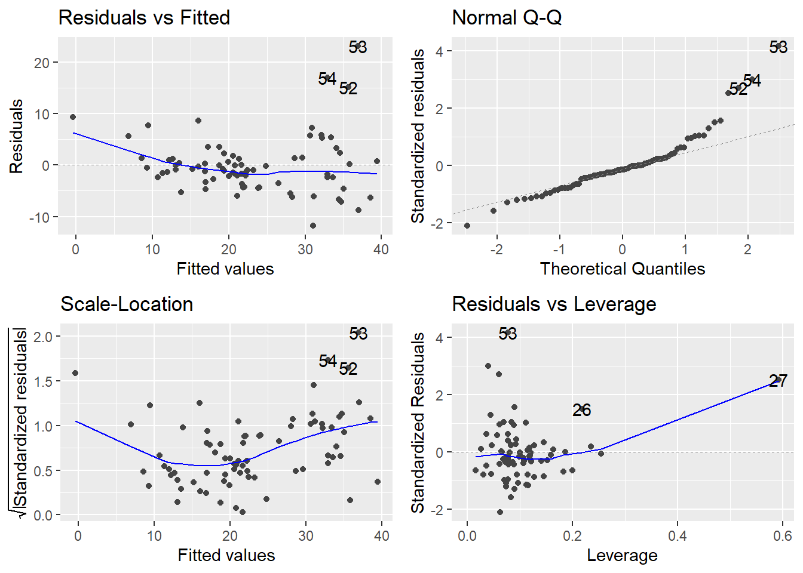
| VIF | |
|---|---|
| B_Miles_Driven | 3.227413 |
| US_Crude_Prod | 2.505679 |
| US_Gasoline_Production | 2.363249 |
| US_Conventional_Stocks_Unblended | 2.048704 |
| US_Crude_Inventory | 1.630329 |
| Truck_Tonnage_Index | 1.588773 |
| US_Crude_NI | 1.520674 |
How does each driver factor into forecasted price?
| Market_Driver | Value |
|---|---|
| US_Crude_Inventory | -93.864823 |
| Truck_Tonnage_Index | 153.315307 |
| US_Crude_Prod | -52.272435 |
| B_Miles_Driven | 38.147852 |
| US_Gasoline_Production | -23.458260 |
| US_Conventional_Stocks_Unblended | -20.595344 |
| US_Crude_NI | -1.756954 |
| (Intercept) | 30.437511 |
| Estimate |
|---|
| 29.95285 |
Risk Assessment Visuals
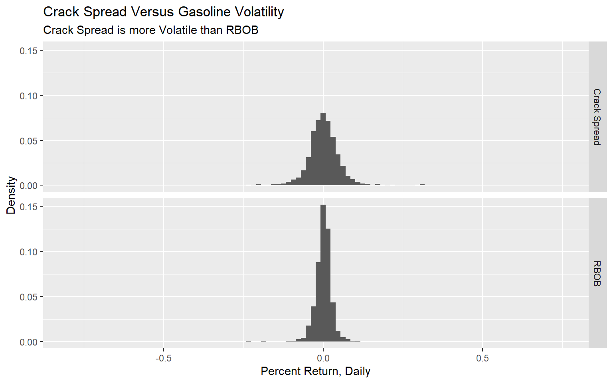
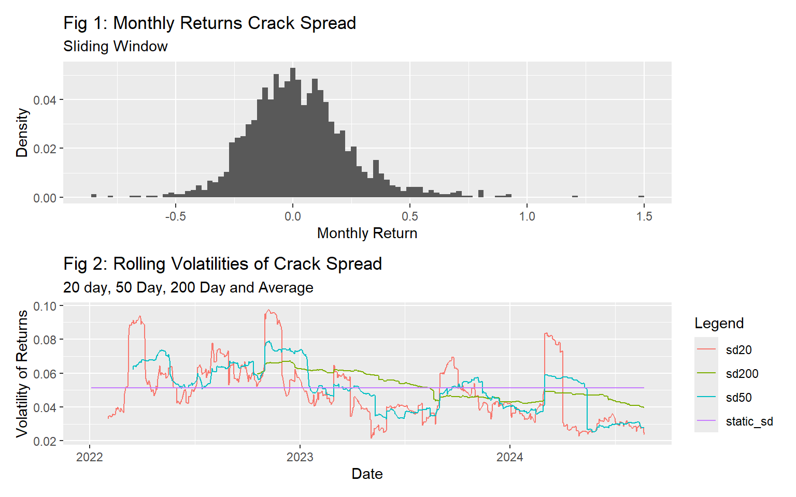
Samples of ARIMA and STL Models
Charts counts for STL and ARMA models exceed 45. For brevity, only sample visualizations and stats used to assess model fit are included below. These examples showcase the diagnostic tools used to fit each model. For a more detailed view of each model, go to the Forecasting code block and set show_all_charts <- True. Note that these charts will appear at the front of the report when rendered, since they are earlier in the workflow.
Sample ARIMA Model
The charts below show the model fitting workflow in order:
- The Raw Data Graphed, to visually assess for structure.
- The ACF and PACF of the raw data.
- The ACF and PACF of Residuals
- The model order to assess structure type.
- The Q-Stat, to assess whether final error resembles white noise.
ARIMA Model on US Crude Inventories | Random Walk
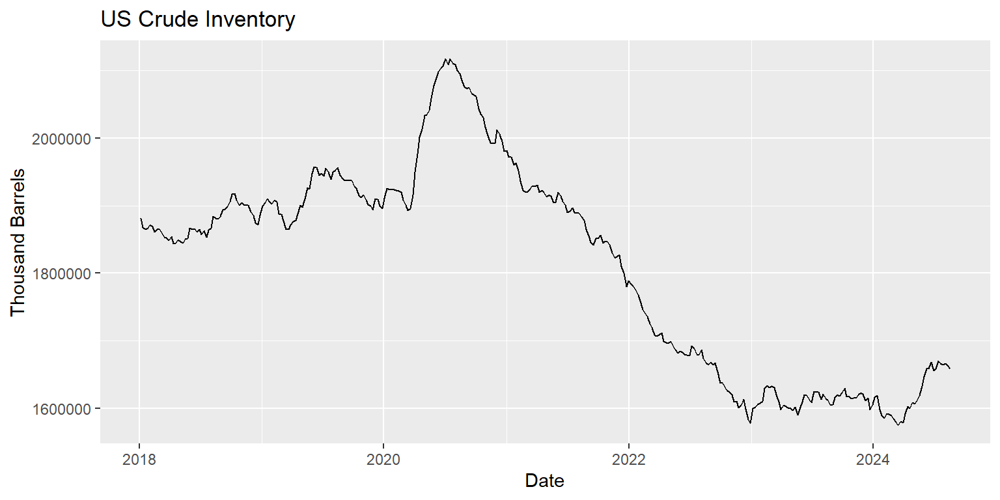
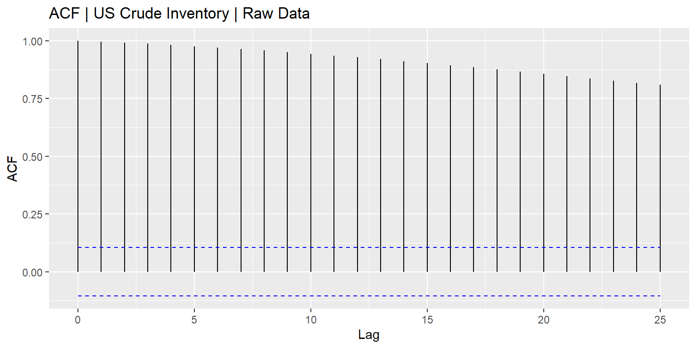
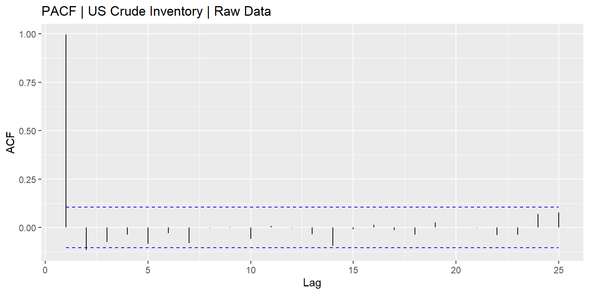
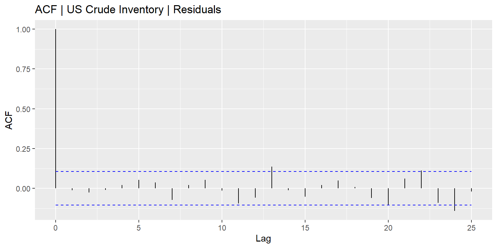
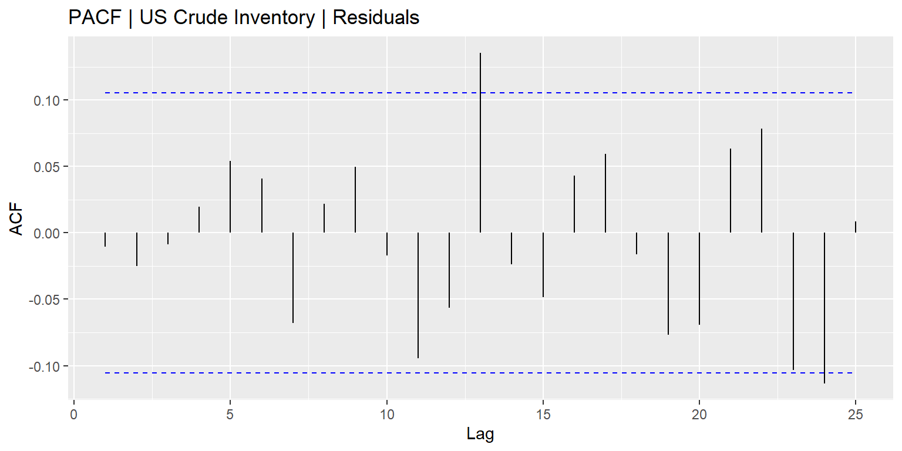
The model order (p,d,q) is 2, 1, 3 and the q-stat p-value is 0.8463071. Larger p-values are better in this case. The null represents white noise and low likelihood of further model improvement through structural capture.
Sample STL Model | Billions of Miles Driven
Below is an example of using STL to capture seasonal and trend components in more regular data. The function developed also returns an ARIMA ready data set of residuals, to generate further analysis as shown previously.
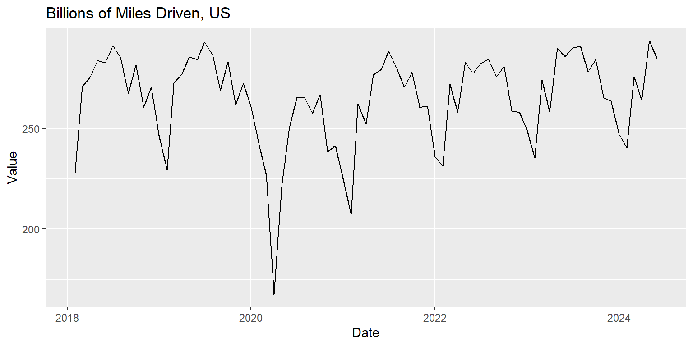
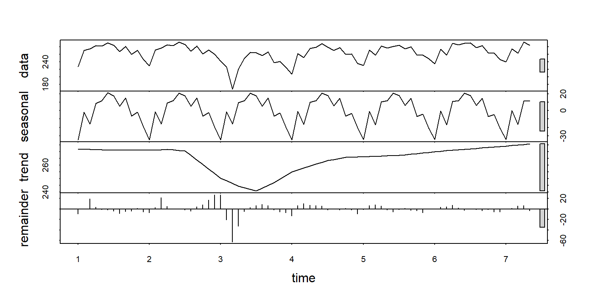
Additional Resources